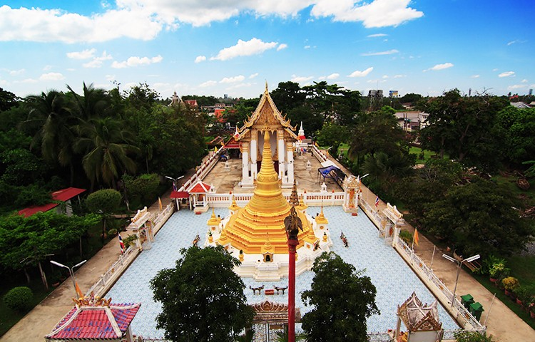
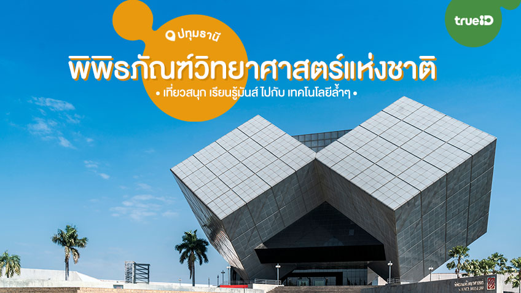
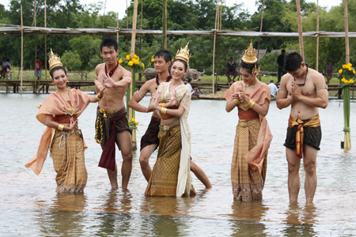

1. วัดไผ่ล้อม
วัดไผ่ล้อมมีชื่อเสียงในด้านประวัติศาสตร์และศิลปวัฒนธรรมแบบดั้งเดิมของไทย
2. พิพิธภัณฑ์วิทยาศาสตร์แห่งชาติ
ที่นี่เหมาะสำหรับครอบครัวและเด็ก มีการจัดแสดงวิทยาศาสตร์และเทคโนโลยีที่น่าสนใจ
3. ตลาดน้ำคลองสระบัว
ตลาดน้ำที่มีอาหารอร่อยและสินค้าท้องถิ่น